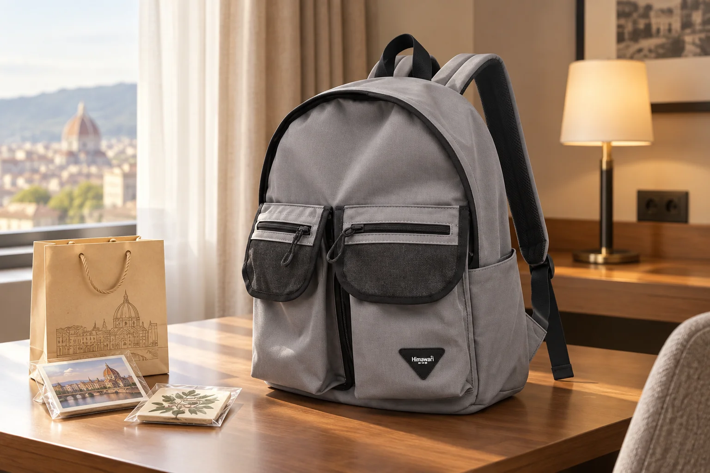

기념품을 사기 전에 돌아올 포장 생각하기

여행지에서 기념품을 고를 때는 진열대 위의 크기가 먼저 눈에 들어옵니다. 하지만 집으로 가져올 물건은 포장된 상태입니다. 작은 공예품에 상자와 완충재가 더해지면 가방 안에서 차지하는 모양이 달라지고, 엽서는 얇아도 다른 짐 아래에서 접힐 수 있습니다. 구매를 결정하기 전에 실제로 받을 포장을 생각해볼 만합니다. 남은 가방 공간에 넣는 방법만 찾기보다 물건의 형태를 유지해 가져올 수 있는지 판단하는 과정입니다.
매장에서는 포장한 상태의 외형과 운반 안내를 물어볼 수 있습니다. 특히 깨지기 쉬운 물건이나 장식이 튀어나온 물건은 어떤 포장을 제공하는지 확인하세요. 가방에 넣는다는 생각으로 포장을 줄이기보다 판매처가 안내하는 조건을 먼저 봅니다. 별도 운반이나 배송이 가능한지 궁금하다면 실제 서비스를 문의할 수 있습니다. 서비스가 있다고 가정하거나 가격을 짐작하기보다 안내받은 선택지와 자신의 이동 방법을 대조하면 됩니다.
종이 기념품과 입체 기념품
엽서나 작은 인쇄물은 두께가 얇아도 평평하게 놓을 면이 필요합니다. 파일이나 받침을 준비할 생각이라면 실제 종이와 포장을 함께 넣어보고 모서리가 밖으로 남는지 확인합니다. 책 사이에 끼워 넣을 경우에는 책을 꺼낼 때 종이도 함께 움직일 수 있으므로 다음에 사용할 물건과 섞이는지 봅니다. 여행 중 읽을 자료와 집으로 가져갈 인쇄물을 구분하면 중간에 여러 번 꺼내야 하는 범위가 줄어듭니다.
입체적인 물건은 높이와 모서리, 장식이 닿는 면을 먼저 살핍니다. 포장된 상자가 가방 입구를 지나가도 지퍼를 닫을 때 주변 짐이 누를 수 있습니다. 포장 안에서 어떻게 보호되는지는 판매처 안내를 따르고, 백팩 안에서는 무엇과 맞닿는지 확인합니다. 옷으로 감싸는 방법을 생각하더라도 물건의 장식에 옷이 걸리거나 습기가 닿는 조건이 없는지 봐야 합니다. 모든 물건을 같은 방식으로 감쌀 필요는 없습니다.
구매한 기념품은 여행 중 계속 사용할 지갑이나 연락 도구와 다른 묶음으로 둘 수 있습니다. 같은 주머니에 넣으면 다음 물건을 꺼낼 때 포장도 함께 움직입니다. 바로 사용할 물건과 집에 도착할 때까지 꺼내지 않을 물건을 나누는 것입니다. 영수증이나 안내가 포장과 함께 필요하다면 다른 임시 종이에 섞이지 않게 두세요. 여러 물건을 샀다면 각각 어느 포장인지 알아볼 수 있는 정도의 표시도 도움이 됩니다.
Himawari No.1230 제품 정보의 그레이 모델을 여행 가방으로 검토한다면 돌아올 짐을 실제로 펼쳐 보는 과정이 필요합니다. 평소 여행 물건을 담고 남은 공간이 어디인지 확인한 다음 포장된 기념품을 대조합니다. 기념품이 가방 안에 들어가는지와 이동 중 눌리지 않을 위치가 있는지는 따로 봐야 합니다. 구매한 물건을 넣기 위해 기존의 연락 도구나 자료를 찾기 어려운 곳으로 밀어 넣게 된다면 운반 묶음을 다시 나눌 수 있습니다.

여행 마지막 날 숙소에서 짐을 다시 펼칠 시간을 남겨두면 구매한 포장을 가방과 대조하기 쉽습니다. 매장에서는 비어 보였던 공간도 여행 중 입은 옷이나 추가 자료가 돌아오면서 달라질 수 있습니다. 기념품을 넣은 상태에서 여밈을 자연스럽게 닫을 수 있는지, 다른 물건을 꺼내려면 포장을 빼야 하는지 확인합니다. 가방을 닫기 위해 상자를 눌러야 한다면 포장을 바꾸거나 별도 운반이 필요한지를 판매처 안내와 함께 판단하세요.
예를 들어 평평한 인쇄물은 파일 묶음으로 두고 상자에 담긴 공예품은 별도 운반 가방에 남기는 구성을 생각할 수 있습니다. 어느 가방에 어떤 기념품을 담는 것이 맞는지는 실제 크기와 포장 조건에 따라 달라집니다. 별도로 든 상자를 내려놓을 때에는 포장을 잡던 위치와 바닥에 놓이는 방향이 같은지도 봅니다. 여러 물건을 하나로 합쳤을 때보다 각각 관리할 수 있는지, 손에 들 짐이 지나치게 늘어나지는 않는지도 함께 봅니다.
들어가는 짐과 들고 이동할 짐
기념품이 추가된 상태로 가방을 메고 이동하는 동작을 확인할 수 있습니다. 무게가 한쪽으로 모였거나 내용물이 움직이는 느낌이 있다면 포장과 배치를 다시 살펴봅니다. 특정 모델의 착용감이 좋으리라 기대하기보다 자신의 실제 짐에서 느끼는 조건을 기준으로 판단합니다. 입구에 겨우 들어간 상자를 다시 꺼내기 어려운지, 공용 공간에서 여러 물건을 펼쳐야 하는지도 생각하면 됩니다. 불편한 상태에서 더 채우기보다 운반 방법을 나눌 수 있습니다.
교통수단을 이용한다면 반입할 물건과 포장의 조건은 해당 운송사의 현재 안내에서 확인합니다. 소재나 내용물 때문에 별도 확인이 필요한 기념품이라면 구매 전에 문의하는 편이 판단하기 쉽습니다. 판매처가 운반이 가능하다고 설명한 것과 실제 이용할 서비스의 조건은 각각 확인할 자료이므로, 어느 쪽의 안내가 필요한지 구분해두면 됩니다.
집에 도착하면 기념품부터 꺼내 포장의 상태를 살펴봅니다. 여러 물건을 모아놓고 안내와 영수증을 대조하면 어느 포장을 남겨둘지 정하기 쉽습니다. 백팩 안에 완충재 조각이나 종이, 먼지가 남았는지도 확인하세요. 계속 사용할 개인 물건은 평소 자리로 돌려놓고 여행 중 임시로 만들었던 배치는 풀어둡니다. 다음 외출의 짐 아래에 기념품이나 안내가 그대로 들어가지 않도록 도착한 날 따로 보관하면 됩니다.
집에 도착하면 기념품을 포장별로 꺼내 상태와 안내를 살펴봅니다. 선물할 물건이 있다면 각각의 포장과 필요한 설명을 함께 두고, 보관할 물건은 둘 자리를 정합니다. 백팩 안에 남은 완충재나 종이도 꺼내 개인 짐과 나눕니다. 여행지에서는 작은 크기로 골랐더라도 집에서는 그 물건의 형태에 맞는 자리가 필요합니다. 다음 여행의 구매를 위해 남길 기록은 상자가 얼마나 컸는지, 종이 모서리를 받칠 면이 있었는지처럼 실제 운반에서 판단하기 어려웠던 부분이면 충분합니다.